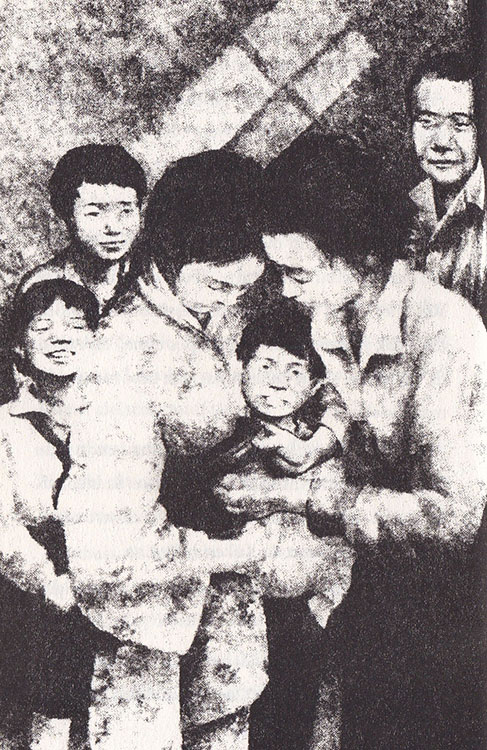

Temmuz ayının sonuna doğru hava sıcak ve güneşliydi. Sadako da iyileşiyor gibi görünüyordu. Masahiro’ya, “Bine yaklaştım,” dedi. “Yani iyi bir şeyler olacak.”
Ve oldu da... Sadako’nun iştahı açıldı ve ağrıları da oldukça azaldı. Dr. Numata bu gelişmeden ötürü memnun olmuştu ve Sadako’ya ailesini ziyaret etmek için eve gidebileceğini söyledi. Sadako o gece öyle heyecanlıydı ki, sevinçten uyuyamadı. Sihir bozulmasın diye de daha çok kuş yaptı.
Altı yüz yirmi bir...
Altı yüz yirmi iki...
Yılın en büyük tatili olan “O Bon”da ailesiyle birlikte evde olmak harika bir şeydi! O Bon, sevdikleri kişileri ziyaret etmek için dünyaya dönen ölülerin ruhları için düzenlenen özel bir kutlama günüydü.
Bayan Sasaki ve Mitsue evi silip süpürerek pırıl pırıl yaptılar. Taze çiçekler masayı renklendirdi. Sadako’nun altın turnası ve Kokeşi bebeği de masanın üstündeydi. Evin içi tatil için hazırlanan yemeklerin kokusuyla dolmuştu. Fasulyeli kek ve top şekli verilmiş pilâvla dolu tabaklar, dünyaya geri dönecek ruhlar için mihrabın rafına konulmuştu.
O gece Sadako, ruhların karanlıkta yollarını bulabilmeleri için annesinin dışarıya fener koymasını seyretti ve mutlulukla içini çekti. Belki de artık hep evde kalmak için gelmişti.
Arkadaşlar, akrabalar günlerce akın akın Sasaki ailesini ziyarete geldiler. Hafta sonu geldiğinde, Sadako’nun rengi yeniden soldu ve yorgun düştü. Sessizce oturuyor ve gelenleri seyrediyordu.
Bay Sasaki, “Hiç kuşku yok ki Sadako artık nazik bir kız oldu,” dedi. “Torununun nasıl kibar bir hanıma dönüştüğünü görmek, Oba’nın ruhunu memnun etmiş olmalı.”
Bayan Sasaki, “Bunu nasıl söyleyebilirsin!” diye bağırdı. “Sevgili Sadakomuz eskisi gibi hareketli olsa keşke.” Bunları söyledikten sonra, gözyaşlarını silerek alelacele mutfağa gitti.
Sadako, herkesi üzüyorum, diye düşündü ve eskisi gibi olmayı diledi. O zaman annesi kim bilir ne kadar mutlu olurdu!
Babası, Sadako’nun aklından geçenleri okumuş gibi boğuk bir sesle, “Haydi artık üzülmeyi bırak. Gece güzel uyursan kendini iyi hissedersin,” dedi.
Fakat ertesi gün Sadako’nun hastaneye dönmesi gerekiyordu. Oraya döndüğünde, sakin hastane odasında olduğuna ilk kez sevindi. Ailesi yatağının yanında uzun süre oturdu. Sadako ise yarı uyur, yarı uyanık öylece yatıyordu.
Uykulu bir sesle, “Öldüğüm zaman çok sevdiğim fasulyeli keki ruhum için mihraba koyar mısınız?” dedi.
Bayan Sasaki’nin nutku tutulmuş, konuşamıyordu. Kızının elini sıkıca tuttu. “Sus bakayım, o nasıl söz öyle,” dedi. Bay Sasaki de neşeli bir sesle, “Sen daha çok yaşayacaksın. Hemen pes etme,” diye ekledi. “Unutma, senin daha birkaç yüz tane turna yapman gerekiyor.”
Hemşire Yasunaga, Sadako’ya rahatlaması için ilaç verdi. Gözlerini kapatmadan önce Sadako, altın renkli turnasına dokunmak için masaya uzandı. Sonra da mırıldanarak, Kokeşi bebeğine...
“Göreceksin iyileşeceğim ve bir gün rüzgâr gibi koşacağım,” dedi.
Doktor Numata, o günden sonra Sadako’ya her gün kan nakli veya iğne yaptı. “Canının yandığını biliyorum ama bunu denemeye devam etmeliyiz,” dedi ona.

Sadako onaylarcasına başını salladı. Hiçbir zaman da iğnelerden, ağrılarından şikâyet etmedi.
Daha büyük bir acı ise kalbinin derinliklerinde giderek artıyordu. Bu ölüm korkusuydu. Bu korkuyla da hastalığıyla savaştığı gibi savaşmalıydı. Altın renkli turna ona bu konuda da yardımcı oldu ve Sadako’ya umudunu yitirmemesi gerektiğini hatırlattı.
Bayan Sasaki, artık hastanede daha uzun süre kalmaya başlamıştı. Sadako, her öğleden sonra plastik terliklerin çıkardığı sesi dinliyordu. Ziyaretçilerin kapıda sarı terlik giymeleri gerekiyordu, ancak Bayan Sasaki’nin terlikleri değişik bir ses çıkarıyordu. Annesinin yüzündeki üzüntülü, kaygılı ifade Sadako’yu çok üzüyordu.
Ailenin son ziyaretinde, akçaağacın yaprakları sararıp dökülmeye başlamıştı. Eiji, Sadako’ya sarı bir kâğıda sarılıp kırmızı kurdeleyle bağlanmış büyük bir paket verdi. Sadako paketi yavaşça açtı. Pakette, annesinin ona her zaman almak istemiş olduğu giysi vardı. Çiçekli, ipekli bir kimonoydu bu. Kimonoyu görünce, Sadako’nun gözleri yaşardı.
“Neden yaptın bunu anne?” diye sordu, yumuşacık kimonoya dokunarak. “Bunu hiçbir zaman giyemeyeceğim, üstelik ipekli kumaş o kadar pahalı ki!”
“Sadako canım,” dedi babası, şefkatli bir sesle. “Annen bu kimonoyu dikip bitirmek için geçen gece geç saatlere kadar uğraştı. Onun hatırı için kimonoyu giyer misin?”
Sadako, yataktan olağanüstü bir çaba harcayarak kalktı. Bayan Sasaki, ona kimonoyu giymesi için yardım etti ve kimononun kuşağını bağladı. Kimono, şişmiş bacaklarını göstermediği için memnundu Sadako. Topallaya topallaya pencereye doğru gidip, önündeki iskemleye oturdu. Herkes, onun kimononun içinde bir prenses gibi göründüğünde hemfikirdi.
O sırada Şizuko geldi. Doktor Numata, Şizuko’nun Sadako’yu kısa bir süre ziyaret etmesine izin vermişti. Şizuko, arkadaşına şaşkınlıkla bakarak, “Bu kıyafet sana okul formasından daha çok yakışmış,” dedi.
Buna herkes güldü, hatta Sadako bile. Ve “Öyleyse iyileştiğimde okula her gün bu kıyafetle gideceğim,” diyerek şaka bile yaptı.
Mitsue ile Eiji, buna kıkır kıkır güldüler.
Ortam kısa bir süre için bile olsa, evde alışık oldukları güzel günler gibiydi. Kelime oyunu oynadılar ve Sadako’nun sevdiği şarkıları söylediler. Bu arada Sadako ağrısını, acısını belli etmemek için iskemlede dimdik oturuyordu. Fakat bu güzel gün her şeye, çektiği acıya bile değerdi. Ailesi odadan çıkarken, oldukça neşeli görünüyordu.
Sadako uyumadan önce ancak bir tane kuş yapabildi.
Altı yüz kırk dört...
Ve ne yazık ki bu, yaptığı son kâğıttan turna kuşu oldu.